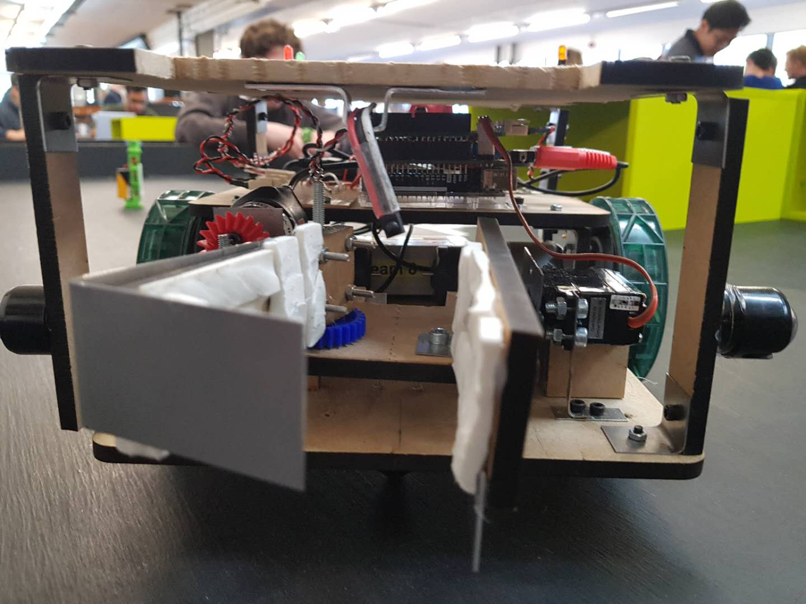

Autonomous Robot Navigation Using Computer Vision
Last edited on: July 17, 2021 12:57 AM
Autonomous navigation is widely used in robotics or any other mobile device as the ability to navigate in their environment is crucial for safe and successful operations. Computer vision is one of the most popular methods in autonomous navigation as the algorithms can extract visual features and analyze complex situations in a variety of environment. This project aims to explore different algorithmic approaches to autonomous navigation and design a self-navigating robot for rescue tasks in a tunnel-like environment.

Introduction to robot navigation
Navigation can be defined as the combination of the three fundamental competencies:
- Self-localisation
- Path planning
- Map-building and map interpretation
Robot localization denotes the robot’s ability to establish its position and orientation within the frame of reference. Path planning is effectively an extension of localisation, in that it requires the determination of the robot’s current position and a position of a goal location, both within the same frame of reference or coordinates. Map building can be in the shape of a metric map or any notation describing locations in the robot frame of reference.
Basic colour detection with OpenCV
Vision-based navigation or optical navigation uses computer vision algorithms and optical sensors to extract the visual features required to the localization in the surrounding environment. The general idea of colour detection is to apply a threshold mask to the image and remove all the pixels that are outside the range of the specified colour. Moreover, it is easier to work in HSV colour space as normally we would like to select pixels with a certain hue but with less constraint on their saturation and value.
1 | |
After the coloured pixels are selected, there may be some noise in the image since the result of the colour detection algorithm depends strongly on the lighting condition as well as camera settings. Therefore, a series of actions is needed to filter out the noise and make the algorithm more robust against environmental changes.
1 | |
After the coloured pixels are extracted from the original frame, we need an algorithm to determine the location of each blob of pixels. Different methods of blob detection can be used including the connected-component analysis, which is an algorithmic application of graph theory, where subsets of connected components are uniquely labelled based on a given heuristic. Alternatively, OpenCV has a built-in simple blob detector which works well for quick and accurate detection.
1 | |
Note that the minArea and maxArea of the blobs need to be specified for the detector to function properly. The area of the blobs may depend on the resolution of the image. Now that the locations of each blob are obtained, we need to work out the location and orientation of the robot based on the information we get from these key points.
Algorithmic approach to self-localisation
In linear algebra, a rotation matrix is a matrix that is used to perform a rotation in Euclidean space.
$$\boldsymbol{R} = \begin{bmatrix} \cos{\theta} & -\sin{\theta} \\ \sin{\theta} & cos{\theta} \\ \end{bmatrix}$$
The approach of localising the robot is to paste a label on top of it with magenta squares at three corners of the paper. Once we retrieve the keypoints from the image, we can work out the edges and the diagonal of the label and with simple sorting and comparison, the centre position vector and top left corner of the label can be obtained and stored in variables. A 45-degree rotation matrix then allows the orientation of the robot to be computed by rotating the vector pointing from the centre position to the top left corner by 45 degrees.
1 | |
In practice, a QR code can also be pasted on top of the robot in order to find the location and orientation of the robot with the ZBar module in python. However, this requires cameras with good quality and resolution to consistently detect the QR code.
Robot control with Arduino
The software system consists of two main programs:
- C++ program is uploaded to the Arduino Uno Wifi Rev 2 with Adafruit
Motor Shield for servo and motor control. - Computer vision program is written in python for robot navigation and sequence control.
For the computer vision program, OpenCV is used for real-time image processing and object detection. The communication between Arduino and workstation is realized using the built-in Wifi function and through HTTP requests. Arduino receives and analyses the instruction and controls the robot movement according to the angle and distance from the calculated target point. Subsequently, functions for grabbing and dropping victims are called when the respective target points are reached.
Pinout
Arduino Wifi Rev 2 is used with the Adafruit motor shield for motor and servo control:
1 | |
The pintout for Arduino can ba changed in arduino/Bin.ino:
1 | |
Servo 2 on the Adafruit shield corresponds to pin 9 on the Arduino.
Wifi
The network SSID name and network password need to be specified in arduino/Bin.ino for HTTP requests:
1 | |
Robot design and hardware
The claw mechanism consists of an electric motor for opening and closing of the claw and a servo for the upward and downward motion. An Infrared receiver is used for victim health detection and two Optoswitches are used for line-following.
Our initial plan was to detect the distance of the robot from victims using an ultrasonic sensor. However, since the computer vision algorithm can also detect distances to a desirable accuracy, we decided not to use the sensor. After experimenting with the line-following circuit, we decided to abandon this part of the program as well and rely solely on computer vision for all robot controls and movement. This results in a simple and elegant code structure but causes problems in the end due to the malfunction of the camera in the actual competition.

Challenges and next steps
Our robot had a poor performance during the competition due to the malfunction of the camera as the exposure is too high for the robot to be accurately
located. We suspect the reason to be the shadows cast by people surrounding the table causing the camera to increase the exposure, resulting in abnormally
desaturated colour at the centre of the table which is exposed to direct lighting from the ceiling. This is not a difficult problem to address as the tolerance for colour detection can be easily adjusted. However, since it was the first time we ever encountered this problem, we did not manage to solve the issue on the spot and the time eventually ran out.
In conclusion, autonomous robot navigation using computer vision remains a very challenging problem and requires more robust algorithms with testing in a variety of conditions to validate the safety and reliability of the system. Throughout the course of this project, we made a valid attempt to tackle these issues and achieved applaudable results in the end despite some imperfections in our system. It is important to be open-minded and consider factors that might be affecting these computer vision systems in a different environment so that they can survive in the real world where, arguably, nothing is predictable.
Documentation
Code for this project can be found in GitHub repository.
Dependencies
Install requests from PyPI:
1 | |
Install OpenCV from GitHub source.
Demo
Video demo of the robot can be found on Youtube channel.
All articles in this blog are used except for special statements CC BY-SA 4.0 reprint policy. If reproduced, please indicate source Ziyi Zhu!